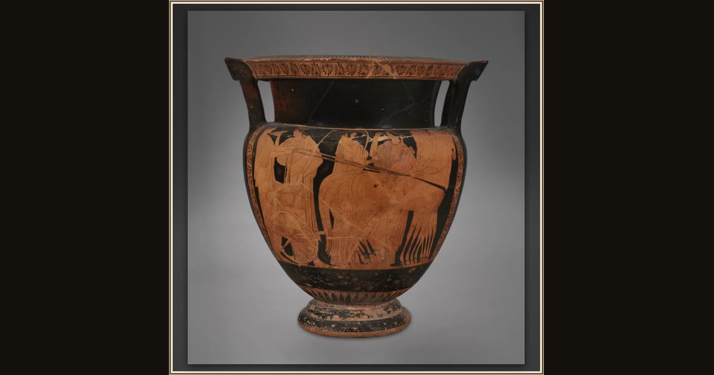

Red-Figure Column Krater (Mixing Vessel): Apollo and Goddesses with Chariot (A); Komos (Revel) (B)
attributed to Cleveland Painter · c. 470–460 BCE · Cleveland Museum of Art · Cleveland, USA
A painted wine-mixing bowl shows Apollo and goddesses in procession; it is a real vessel like those used to mix wine at Greek feasts. Explore its place in Book I of the Odyssey.